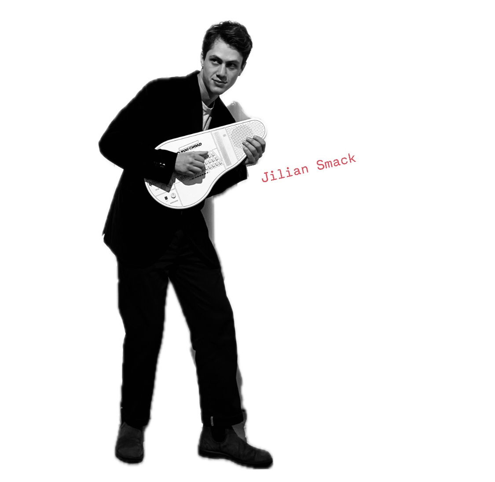

Jilian Smack
Jilian Smack is Ian's solo music project. It focuses on his practice as a composer/producer, of cartoon-music, cover songs, DJ mixes, musical drafts and experiments. It's a work-in-progress project, a musical diary.

self portrait with my keyboard

"Let's put our hearts together
And say we'll leave each other never"
Questa compilation è un tributo a Brian Wilson, realizzato da 26 tra artisti e band italiane. Il progetto è nato spontaneamente, diffondendosi di passaparola, in seguito all'ondata di commozione che ha seguito la sua recente scomparsa. Ognuno di noi ha contribuito la propria versione di uno dei suoi brani come atto di amore e riconoscenza verso il suo lavoro. Grazie e buon ascolto!
This compilation is a tribute to Brian Wilson, created by 26 Italian artists and bands. The project arose spontaneously, spreading by word of mouth, following the wave of emotion that followed his recent passing. Each of us contributed our own version of one of his songs as an act of love and gratitude for his work. Thank you and enjoy listening!
Credits
Released August 15, 2025
Artwork: Martino Petrella